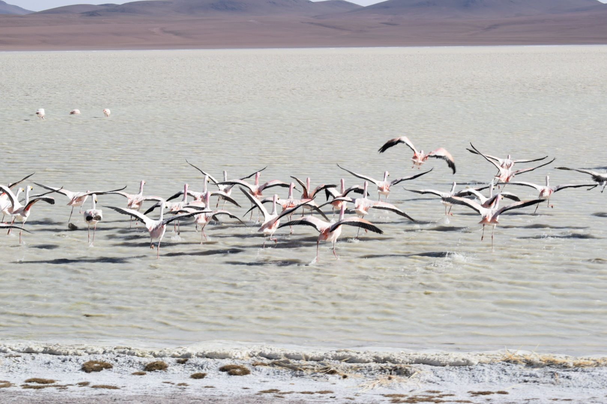

Photography Here are some pictures I have captured over the years. Pokhara Lakeside - Nepal, 2018 Uyuni - Bolivia, 2023  Uyuni - Bolivia, 2023 Uyuni - Bolivia, 2023 London, 2017 London, 2017 London, 2016 London, 2016 ❮ ❯